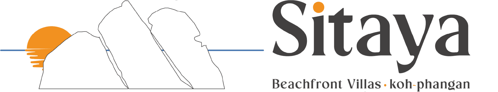

Island Guide
Your Koh Phangan
Companion
Finding your location…
📍
Tap to find spots near you!
Show spots within:
3 km
🌍 All
🍽️ Eat
☕ Coffee
🍹 Drinks
🏖️ Beaches
🎯 Activities
💪 Gyms
💆 Massage
Finding amazing spots…
Now
🌅 The sun has set — beaches are off the list for tonight. Time to eat, drink, and be merry! 🍹